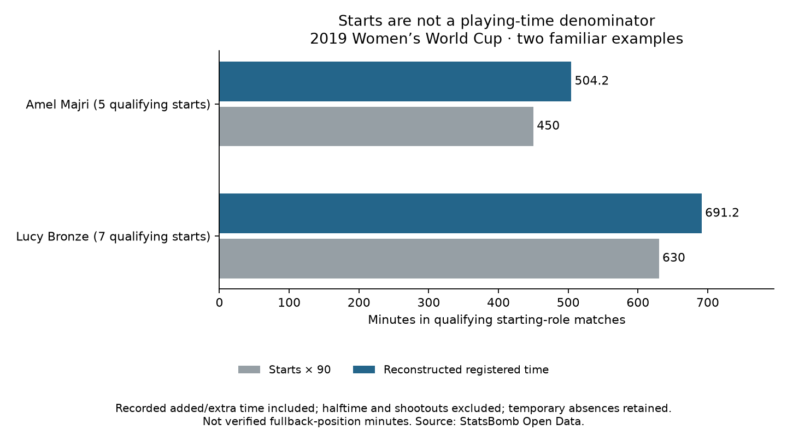

Football analyst training · Recruitment phase · Lesson 64
Count minutes, not just starts.
Read: Soccermatics Lesson 3 — Statistical scouting → Normalisation.
We have 35 players in our study group. Now we reconstruct how long they were registered on the pitch in the matches where they started at left back or right back.
Why starts × 90 is wrong
- A player can be substituted before full time.
- Added time makes a period longer.
- Some knockout matches have extra time.
For our method, added time and extra time count. Halftime breaks and penalty shootouts do not. Temporary injury absences remain included under our registered-time convention.
The completed assignment
We checked all 52 matches and both teams' time totals. Then we summed the relevant intervals for our 35 players across their 145 qualifying starts.
- Lucy Bronze: seven starts → 691.2 reconstructed minutes, instead of 630 from 7 × 90.
- Amel Majri: five starts → 504.2 reconstructed minutes, instead of 450 from 5 × 90.

These are reconstructed event-clock totals. We have not checked them against independent official minute totals. They cover qualifying starting-role matches, including any later role changes; they are not verified minutes spent specifically at fullback.
What this prepares
Actions per 90 = selected action count ÷ selected minutes × 90 Toy example: 10 actions ÷ 200 minutes × 90 = 4.5 per 90
The toy actions are illustrative. We have not calculated the new player action rates yet. Counts and minutes must cover the same matches and playing intervals.
Practice: a player is substituted after 60 minutes. Should we assign 90 minutes because she started?
No. Use her reconstructed interval ending at the substitution. Starting does not mean playing the full match.
Run 64_fullback_playing_time.py in Spyder. Read the full report and reference with competition, season and course reading. Assisted assignment; ask your teacher about any unclear denominator.